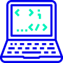

Episodios

De dónde venimos
Our posturing, our imagined self-importance, the desilusion that we have some privileged position in the Universe, are challenged by this point of pale light.
Our plante is a lonely speck in the great enveloping cosmic dark. In our obscurity, in all this vastness, there is no hint that help will come from elsewhere to save us from ourselves.
Invitadas/os estelares


-

Trabajo Remoto
-
Repensando la programación
-

Bases del código
-

Seguridad informática